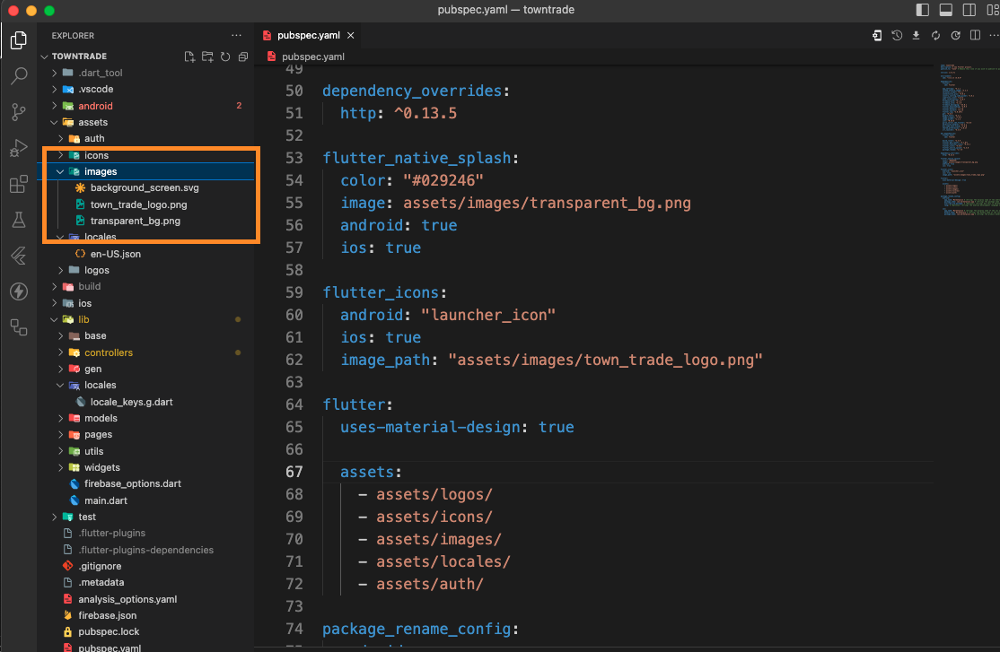
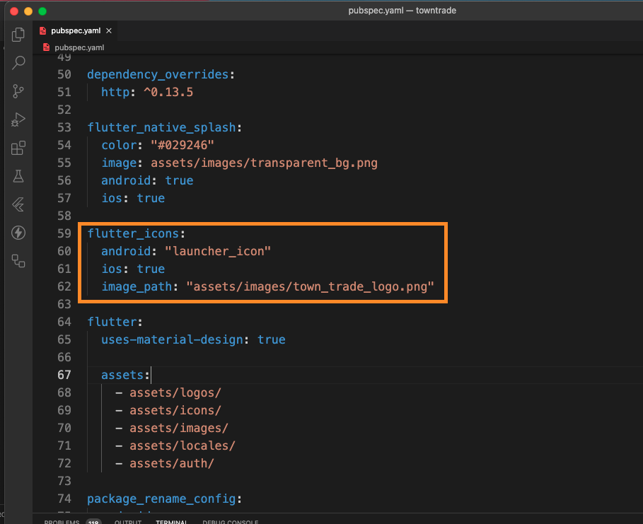
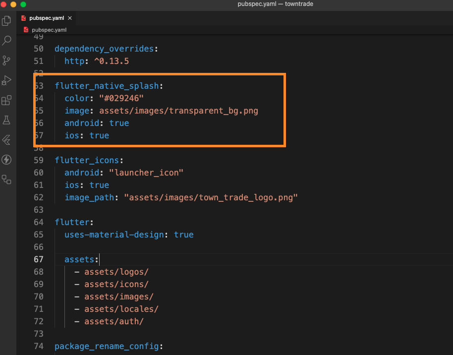

Update App Icon and Splash Screen of the Apps
Changing App Icon
This guide will help you change the app icon of Towntrade Customer App and Towntrade Admin App using the flutter_launcher_icons package (version 0.13.1).
Step 1: Adding Images to public
First, add or replace the new image you want to use as your app icon. For example, you might place it inside the /images/ folder:
- For iOS: Recommended icon size is 1024x1024 pixels.
- For Android: Recommended icon size is 512x512 pixels.

Step 2: Update the Path in pubspec.yaml
Next, update the pubspec.yaml file to point to the new image path.
- If you want to use same images for iOS and Android:
Open
pubspec.yamland locate theflutter_iconssection. Change theimage_pathto the path of the new image:

- If you want to use different images for iOS and Android, you can specify separate paths for each:
flutter_icons:
android: true
ios: true
android_icon: "/images/android_app_icon.png"
ios_icon: "/images/ios_app_icon.png"
Step 3: Regenerate the App Icons
After updating the pubspec.yaml file, regenerate the app icons by running the following command:
flutter pub run flutter_launcher_icons:main
Changing Splash Screen
This guide walks you through the steps to set up and customize a splash screen in your app using the flutter_native_splash package.
Step 1: Adding Images to public
First, add or replace the new image you want to use as your Splash Screen. For example, you might place it inside the /images/ folder.Ensure that the image is correctly named and saved in the appropriate folder. It is recommended that the image is in PNG format for better compatibility.
Step 2: Update the Splash Screen Configuration
Next, update the flutter_native_splash configuration in your pubspec.yaml file to point to the new splash image.
In the pubspec.yaml, locate the flutter_native_splash section and change the image field to point to the new splash image path:

Step 3: Regenerate the Splash Screen
After updating the image path in your configuration, regenerate the splash screen by running the following command:
flutter pub run flutter_native_splash:create